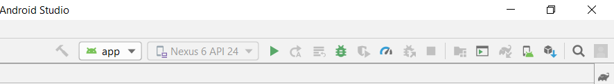
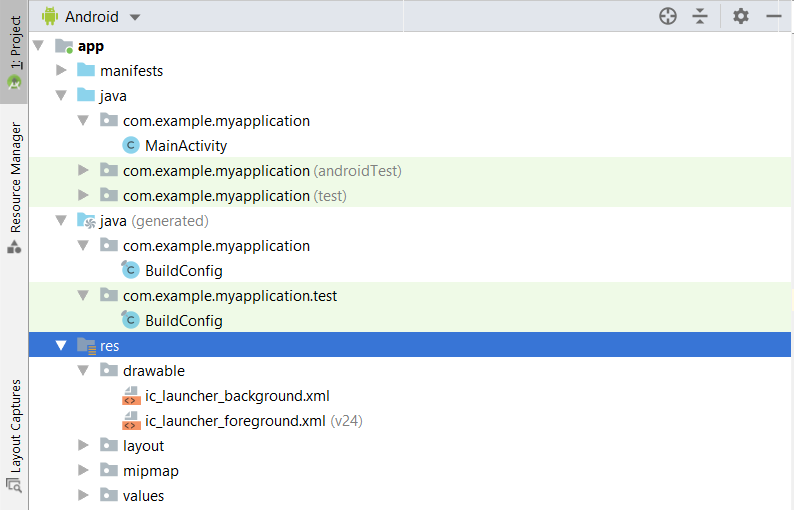
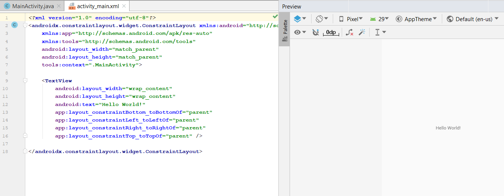
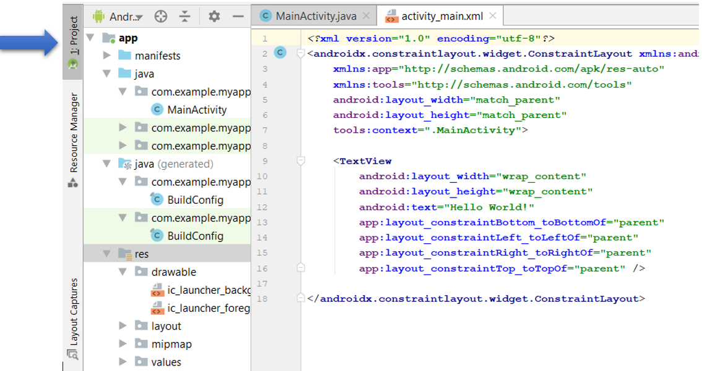
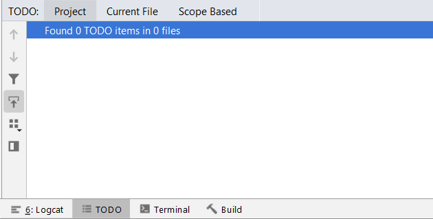
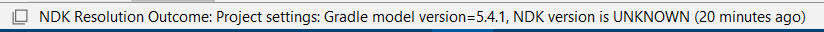

La interfaz de usuario de Android Studio es un tanto mas rígida que otros software. Pero una vez que el usuario se adapta es una interfaz amigable, y ademas cuenta con varias herramientas que hacen el trabajo mucho mas sencillo. Su pantalla principal consta de varias áreas que se detallaran en esta sección.
La ventana principal de Android Studio, tiene las siguientes áreas.
Esta herramienta permite realizar muchas acciones importantes referentes a la complicación de la app. A la compilación del emulador, opciones de copiar, pegar, guardar, etc.
Esta barra esta debajo de la barra de herramientas o bien a un lado como en la primer imagen, se usa para navegar en su proyecto. Puede abrir archivos para editarlos, o las diversas carpetas. Si se da clic sobre alguna de las rutas aparecen las opciones de archivos que tiene esa ruta, por lo que es muy sencillo navegar.
Es donde se escribe el código tanto xml, java o Kotlin. Aquí también se encuentra la vista previa de la app. En esta sección, puede escribir su código. Aquí es donde se abren todos los archivos, para que los pueda editar. Es posible abrir múltiples archivos. Además puede ver los archivos XML, con una vista previa en un celular, el cual puede elegir su resolución y demás parámetros.
Se encuentra en el lateral izquierdo de la pantalla, esta contiene varias herramientas individuales que se pueden expandir o contraer según se requiera. Aquí se puede ocultar por ejemplo la ventana de Proyecto, para poder trabajar con más espacio en el código, es decir, en la ventana del editor.
En esta ventana se puede acceder a tareas especificas. Aquí están las carpetas y archivos de su proyecto. Así como mensajes, el estado de compilación, el logcat, etc. Se puede expandir y contraer según lo requiera. En general las herramientas que tiene esta ventana, muestran mensajes.
Es una barra se encuentra en la parte inferior de la pantalla. Esta indica el estado actual de tu proyecto, así como mensajes o advertencias. Simplemente es un lugar que se usa para que veas el estado de alguna tarea o identifique el estado de tu proyecto.
